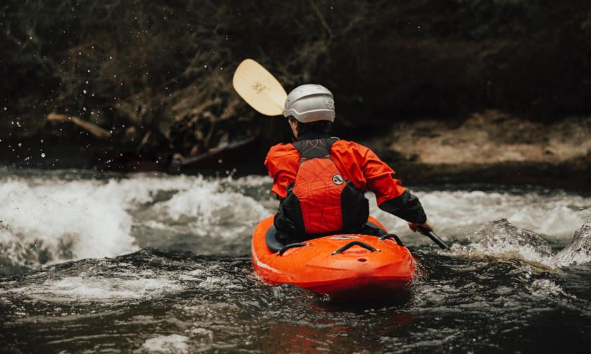

Are you feeling that there is something missing from you’re life? Do you enjoy activities that take you out of your comfort zone? If challenging yourself is something that would interest you, then why not try paddlesports?
In the UK, ‘paddlesports’ is the collective term for all paddling disciplines. In each of these watersports the paddler sits or stands on a board or vessel.
Beginners start paddling on flat water (lake or swimming pool) to develop basic skills, this helps them learn better control of their boat. If correct safety precautions are taken, it can be an enjoyable experience creating a positive memory for the whole family. A glimpse into the world of Paddlesports
Are Paddlesports for Me?
The Benefits:
- Increases power and core stability
- Enhances concentration & coordination
- Relieves stress
- Provides new opportunities to meet others
- Takes you to new places
Want to know more about the health benefits of paddling? See the article by British Canoeing:
Health Benefits of Canoeing
.
 Sea Kayaking
Sea Kayaking
Vessels Which Beginners Gravitate Towards
Open Canoeing
An open top vessel, in which someone can either sit or kneel in. By using a single bladed paddle, they move over the water from point to point.
Open canoeing is normally used for long distance journeying, yet this discipline still appeals to adrenaline junkies, e.g. white water canoeing , freestyle , and canoe sailing . White Water Open Canoeing
Kayaking
You sit inside a vessel, whilst using a double bladed paddle, you can move from point to point. It is known for its creeks, freestyle, going over waterfalls, surviving in stoppers/holes (grippy water) and going down whitewater rapids.
The main discipline people will hear is whitewater kayaking, yet there are other disciplines that show you unique environments, which are, sea kayaking , freestyle , slalom and touring (touring - main discipline within inland kayaking). White Water Kayaking
Stand Up Paddleboarding (SUP)
The paddler uses a hard or inflatable paddle board (like a surfboard) and a long shafted single paddle blade to balance on whilst getting from point to point. It is a great way to get involved in paddling as some people are anxious about getting inside a boat.
People are normally able to stand up on the board within 30 minutes but if they can not do it in that session, then they can easily just knee and paddle. Stand Up Paddleboarding (SUP)
Costs and Equipment
The Costs:
- Depending on the club, average prices per session are £5-10
- £10-15 on average, one-off taster sessions
To find your nearest activity centre or club, please see the British Canoeing: Canoe near you . There you will find details on canoe clubs and activity centres, and they will inform you of their pricing.
Insurance/Membership
When you first start your paddling journey, being in a club gives you the below benefits, but once you start venturing out with your friends paddling, it is advisable to get the British Canoeing membership, as the benefits include:
- Individual Members’ Cover (for more information click here )
- Licence to paddle over 4,500 km of river navigations and canals
Equipment Needed:
When first going paddling at a paddle/canoe club, you are expected to bring:
- Cagoule
- Waterproof trousers
- Trainers (soft sole)/plimsoll (no flip-flops)
- T-shirt (try to shy away from cotton products)
- Leggings (no jeans)
- Swimming shorts/costume
- Towel and a full set of clothes to change into after the session
- Flask of warm liquid
- Energy food
The advantages of starting at a paddle/canoe club is that fellow paddlers can advise you on what clothing and equipment to acquire.
Below is what a standard paddler wears and uses when paddling. For a more extensive list of paddle clothing or equipment, drop us an email , and we’ll be happy to help.
Personal Equipment
Below is a list of equipment that a paddler would use whilst paddling. Some equipment is not suitable for beginners, but they may require it in the future as they become more advanced — items with * are essential.
Spray Deck
An essential piece of kit that stops water from getting into the boat. You will need training before using spray decks. It is vital that you know how to remove it from the boat when upside down.
 Helmet*
Helmet*
Whether you are paddling down a creek to just bobbing on the lake, it is important to wear a helmet. It seems obvious paddling on moving water to protect your head, but even paddling on a lake, other paddlers could accidentally hit you with their paddle/boat. Buoyancy Aids (BA)*
The BA also known as Personal Flotation Device (PFD) will help you swim/float to safety, also provide warmth and protection. It is different to a life jacket, as all its flotation is around the mid section of the body, allowing you to swim easily in the water. For information on the difference between BA’s and life jacket,
click here
.
 Throw Line
Throw Line
It is important to know about this advanced piece of kit, as you maybe the paddler safely being rescued from the river. Before getting one, it is advisable to be trained in using it ( safety and rescue course ). Knife
Ropes and water do not mix, and the safest way to manage that risk is by having a knife with a serrated blade in your BA.
First Aid Kit
Essential anywhere, but make sure you use a dry bag to put the first aid kit in, as it’ll get wet and not be effective. If you make up your own first aid kit, get advise from experienced paddlers/coaches.
Dry Cag (or Dry Suit)*
A dry cag is a waterproof top that has latex seals at the neck and wrists. You can also have ‘semi dry cags’, where the wrists have latex seals and the neck has a neoprene seal. The dry suit is an all-in-one, and has latex seals at the neck, wrists and ankles, with a zip at the back for getting in and out of.
 Dry Trousers (or Neoprene Shorts)*
Dry Trousers (or Neoprene Shorts)*
A waterproof trouser that has latex seals at the ankles. Neoprene shorts are normally worn in warmer conditions.
 Rash Vest*
Rash Vest*
In winter conditions, the vest provides warmth as it acts like a second skin when under a dry cag, yet you could wear it without a cag during the summer months. Neoprene Shoes*
These shoes are used with all types of kayaks as they are comfortable when placing your feet into small spaces within the boat. Plus they reduce risk of entrapment when getting out of the boat. Knee Pads
These pads are used when canoeing to provide comfort and support to the joint on long journeys. They also help short paddling sessions if you are having to kneel rather than sit on the seat.
Boats/Board
There are different types of boats that you will see around. As a beginner, you will discover ranges of recreational/river running kayaks or traditional open canoes, as these boats are normally available to use at clubs.
You might spend a bit of time paddling these boats but then find that SUPs are where you wish to spending most of your time. It is important to try different disciplines to get a better understanding of where you may wish to start your paddling journey.
Choosing your Boat/Board
After paddling for a number of months, and feel strongly enough in the sport, you may wish to own your own boat. You need to ask yourself a number of questions:
- What type of paddling do I want to do? (Sea, Touring, River)
- What boat or board do I feel comfortable using?
- What is my budget?
- Where will I store it? (Home, Club)
- Are you wanting to paddle long journeys and need storage for kit?
- Are you wanting stability or manoeuvrability?
Answering all the above questions starts to get very complicated, if you’re just starting out and a bit unsure. Getting it second hand is more advisable as you might feel differently in 6 months. Places to get these would be from your club, ebay or social media sites like gumtree or facebook.
See the below videos on canoeing, kayaking and SUP to get a better idea of what your exactly looking for in a particular boat/board.
Choosing a Canoe
Choosing a Kayak
Choosing a Stand Up Paddleboard (SUP)
Skeg
Beginners, when first learning to paddle, can use a ‘skeg’ (rudder system) or a weighted item, e.g. a weighted milk carton, that is at the rear of the boat and drags through the water slowing down the boats movements to go off course. Sea kayaker’s find the skeg a great attribute when paddling through choppy waves in high winds.
Paddles
They come in all shapes and sizes, with long/short shafts and different shaped blades with names like spoon, flat, dihedral, and wing. It depends on the disciplines as to what blade shape is best. It helps to manoeuvre the boat from place to place, and keeps the paddler and boat up right.
Paddle: Single Blade (Canoe)
Smaller than a SUP paddle, this type of paddle has a single blade, a shaft and a handle (T-grip) at the top of the shaft. The SUP looks very similar just longer, with the blade in a slightly different fixed position.
 Paddle: Double Blade (Kayak)
Paddle: Double Blade (Kayak)
This type of paddle has a single blade of both ends of the paddle with a shaft in the middle to separate them.

Good and Safe Paddling Practice
If good and safe paddling practice are followed then it will reduce risk, sustain life around the waters edge and keep you having fantastic adventures.
Communication
- Tell someone outside the group where you will be paddling
- Tell them what time you will be getting on/off the water
- Paddling clubs have experienced coaches who keep eyes on the groups, greatly reducing risk
Weather
- Knowing the weather from previous day and present day can help you make a safe decision on whether to paddle that section of water
- Get off water if thunder and lightening is present
- Windy conditions can make paddling hard and dangerous
Navigation - Access/Egress Points
Having an understanding of where to get in (access) and out of the river/water (egress) is very important, as being on lakes you could get lost due to getting blown away from the area you know. Equally, paddling down a river you may have forgotten the get out (egress point) and just below is a dangerous rapid. Knowing certain points/landmarks on land to watch out for can help you stay focused and safe.
Countryside Code
When out in the environment consider:
- Limiting the amount of damage to the bank side when entering and exiting the river/lake
- Trying to keep to paths and designated areas to launch
- Don’t litter and take everything home with you
- When paddling, keep the noise down as to not bother wildlife and also try to stay at a safe distance away from them
- Leave only footprints and take only memories
Personal Protective Equipment (PPE)
Make sure you are wearing suitable clothing for the time of year you’re going to paddle. The paddling coach or a competent paddler are to check your helmet and BA (PFD) fit properly.
Warm Ups and Cool Downs
- General warm up focus on getting the body ready for a strenuous activity, picking up the heart rate in turn increasing the circulation
- Discipline specific warm up focus, same as above, but more disciplined specific movements
- Generic cool down - end of paddle, slowly reduce the speed, reducing heart rate to finish then get out of water
- Discipline specific cool down - focus on a particular routine to bring the heart rate down
An Introduction to the Fundamentals
It is important not to get overloaded with the many types of paddling strokes there are and focus on the Fundamentals of paddling.
Fundamentals of Movement
- Balance
- Co-ordination
- Agility
Fundamentals of Paddlesports
- Active posture
- Connectivity
- Power transfer
- Feel
We should focus on the fun side of fun-damentals, but along the way of introducing someone to paddlesports, we must think about setting this person onto the correct path, so we do not create bad habits that have to be corrected later (often very hard).
**Summary to the coach: **Keep it fun so the person is always wanting more, whilst all the time maintaining correct technique of the fundamentals.
Awards and Qualifications in Paddlesports
If you are keen to learn more about progressing in paddlesports, then there are two main routes you could take.
Awards: Personal Performance Awards (a measure of your own competency)
Qualifications: Paddlesport Instructor (a pathway to teaching)
These two pathways are very often entwined as the further along these you go, the more your skills will cross over from one to the other. However, they can also be a stand-alone pathway in your paddling journey, as this is all about what suits you and the direction you wish to go.
Paddling Further Afield
Certain aspects of paddlesports are more adventurous or extreme than others. If you are planning a trip, big or small, and there are aspects of which you are unsure of, it is always advisable to join a local club, as this will open up a wealth of knowledge to you and very often enhance your expedition or trip. To find out where your nearest club is click here .